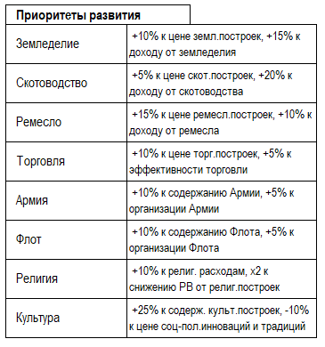

Численность населения прямо влияет на размер территории (и соответственно на то число построек, которые можно в ней возвести).
Если сокращение населения приводит к уменьшению размера, «лишние» постройки продолжают функционировать, однако новые строить нельзя. Наличие знака «+» в балансе страны в записи о размере провинции/города говорит о том, что там имеется свободное население и можно строить новые постройки.
При превышении числа построек над размером локации снижается доход локации.
Максимальный размер территории равен 12, даже если численность населения превысит требуемый уровень.
Любая постройка занимает 1 слот. Постройки в одной провинции/городе нельзя дублировать (нельзя строить по несколько однотипных).
Стоимость строительства построек указана в балансе. Доступны для строительства только такие объекты, название которых имеется в списке зданий.
Города – особые вид территорий, отдельно указанные в балансе. Для них актуальны все статистические атрибуты (размер, численность населения, РВ и т.п.).
Создавать новые города можно только в тех местах, где они предусмотрены на карте игры. Для создания города нужно потратить определенное кол-во кт/о (указано в балансе). Численность населения нового города – 1 тыс.чел.
Чем больше в стране городов, тем «дороже» обходится город.
Провинция отличается от города тем, что некоторые постройки доступны для строительства только в городе (подробнее об этом – в описании возводимых построек).
С позиции боевой механики важно понимать, что провинция не может находиться в осаде или быть взята штурмом. В провинции возможны только полевые сражения.
Город по умолчанию получает ту структуру культуры и вероисповедания населения, которые имеются в провинции. Однако, допустимо создание города с только одним из альтернативных этносов/религий провинции.
Новые города наносятся на карту и дополняют игровой баланс создавшей ее страны.
Нельзя основывать новые города, если страна находится в состоянии войны.
Численность населения провинции изменяется вследствие естественного прироста и миграции.
Если информация о численности населения содержит знак «+», то это говорит о том, что в данный ход население города/провинции приросло, если знак «-», то убыло.
На прирост населения влияют достаток п/п, настройки ВП, культурные и религиозные особенности населения.
К продуктам питания (п/п) относят:
1) Зерно;
2) Мясо;
3) Рыба;
4) Фрукты и Овощи.
Помимо этого, есть ряд ремесленных построек, которые вырабатывают п/п — Мельницы, Амбары, Коптильни и т.п.
Мобилизационный потенциал (МП) – условное обозначение той части населения, которое может быть рекрутировано в армию. Лимит флота – условный свободный остаток флота, который можно тратить на постройку военного Флота.
МП для каждой страны указан в балансе и определяет максимальное число военных юнитов, которое страна может иметь. При недостатке МП (превышении размера армии над МП), формирование новых армейских юнитов, а также постройка новых кораблей невозможны.
Провинции с титульным этносом и государственной религией обеспечивают больший МП.
Население провинций обладают этническими отличиями (культурами). Как правило, культура столичной провинции страны является титульной культурой всего государства. Но не всегда. В игре могут присутствовать страны, в которых культура правящей династии обладает культурой, не совпадающей ни с одной из имеющихся в стране. Такая ситуация характерна для вновь образованных в ходе иноземного завоевания стран.
Наличие в стране провинций с негосударственной культурой увеличивает стоимость стабильности и является одним из факторов, вызывающих риск восстаний.
Ассимиляция - это замена населением провинции одной этнической принадлежности на другую, считающуюся основной культурой данной страны (т.е. смена культуры провинции).
Ассимиляция возможна по желанию игрока в провинции с компактным проживанием двух этносов или в провинции, граничащей (в т.ч. в пределах 1 м/з) с той, чья культура будет перениматься.
Для успешного проведения ассимиляции требуется трата культурных очков. Стоимость ассимиляции указана в балансе страны.
Ассимиляция – не является процессом с гарантированным результатом и зависит от случайности.
Ассимиляция идет в несколько этапов: сначала происходит замена (появление второго этноса в провинции — вторая строчка баланса территории), потом этнос со второй строки баланса перемещается на первую — это говорит о том, что 2/3 населения стало этносом нужного вида. Окончательный этап — полное замещение нужным этносом населения данной провинции/города.
Кроме того, игрок может поменять титульный этнос страны на другой, проживающий в этот момент в его стране. Для этого необходимо заключить брак с местной знатью и заявить о смене титульного этноса. Страна при этом теряет -2 стаб. (как при смене религии).
Рабы являются не только специфичным товаром, но и источником доходов для страны.
Доходы, получаемые от эксплуатации Рабов, указываются в балансе. Численность Рабов может накапливаться (т.е. если страна «производит» или покупает Рабов в текущий ход, то в след.ход их число увеличится на кол-во «произведенных» или купленных). Если происходят события Восстание Рабов, то численность Рабов сокращается.
Увеличение числа Рабов происходит также за счёт побед в сражениях в ходе войн.
Численность Рабов влияет на вероятность события «Восстание Рабов».
Восставшие рабы захватывают локацию, но победа рабов не ведет к возможности отделения восставшей провинции (как в случае с обычным мятежом).
Приоритет – выбранная Игроком специализация своего народа.
Всего можно иметь 1 приоритет. Специализация приоритетов указана в балансах стран. Принимать/менять приоритет можно за кт/о по цене указанной в балансе.
